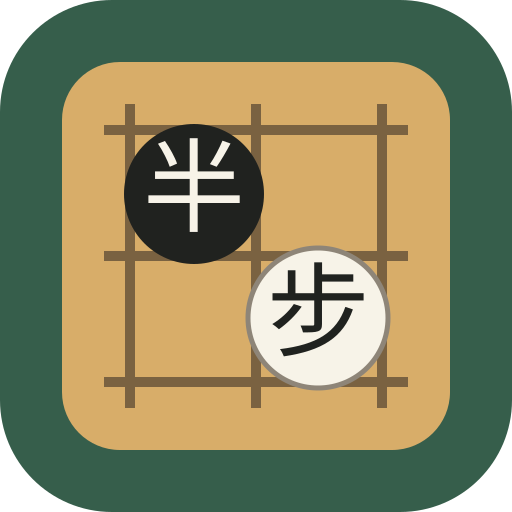
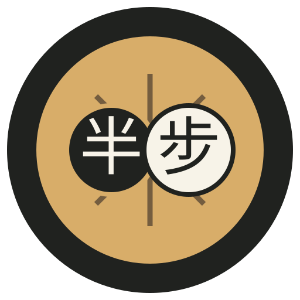
02 · 圆桌棋局
徽章感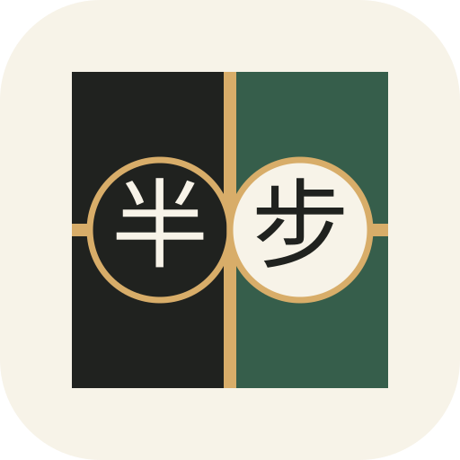
03 · 分界棋盘
黑白分区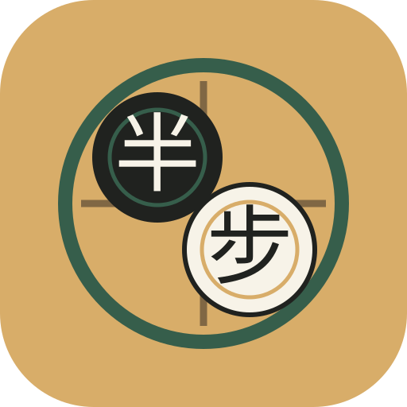
04 · 双环落子
现代感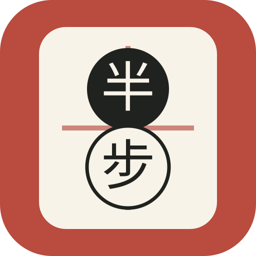
05 · 双字棋印
东方印章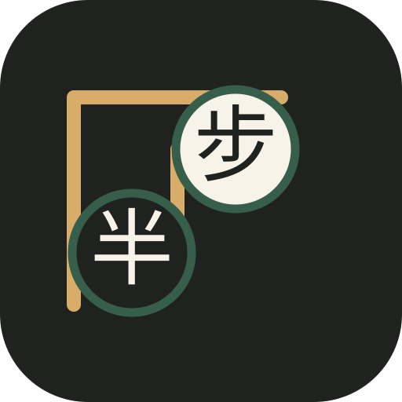
06 · 阶梯半步
品牌独特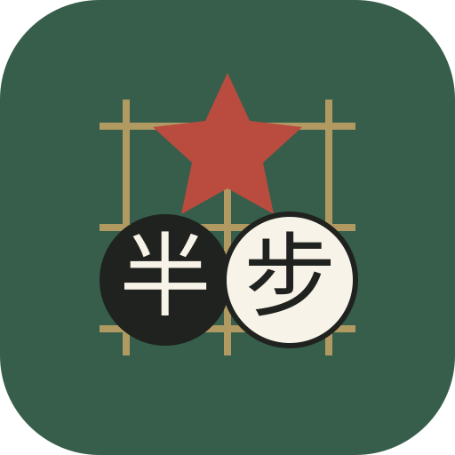
07 · 五连星
胜负感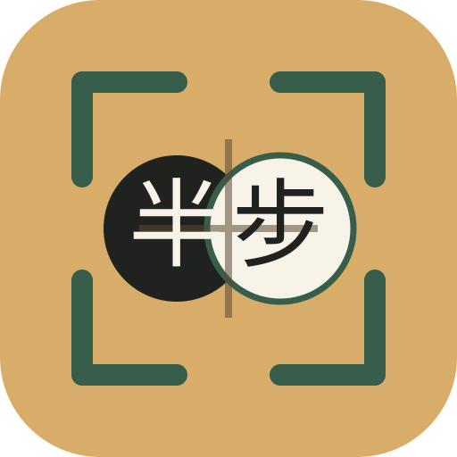
08 · 棋盘角框
图标识别强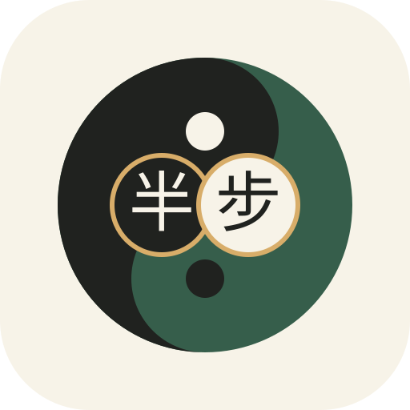
09 · 阴阳棋子
黑白融合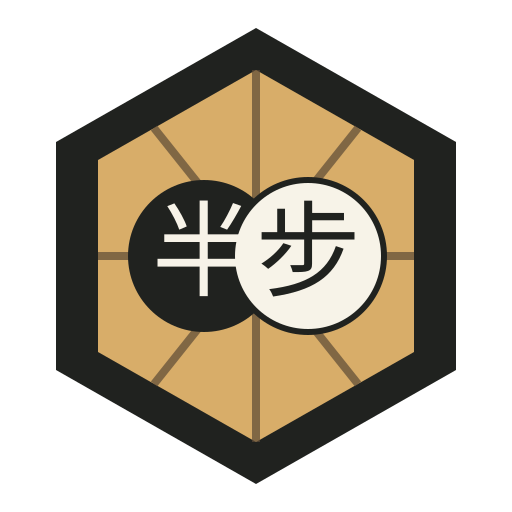
10 · 六边棋盘
硬朗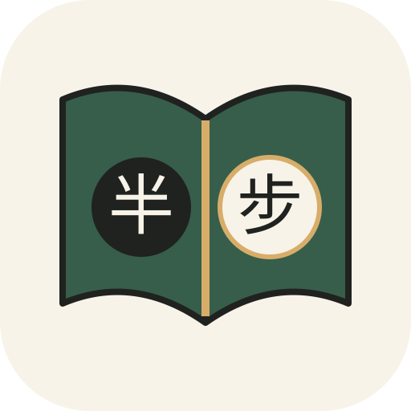
11 · 棋谱双页
学习工具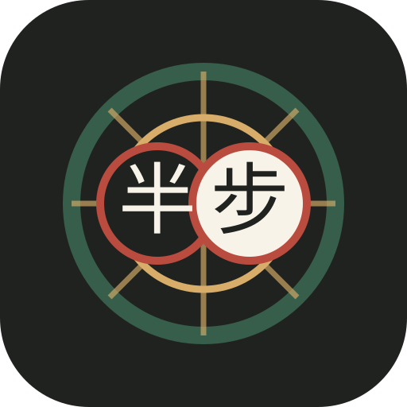
12 · 局面分析
AI/研究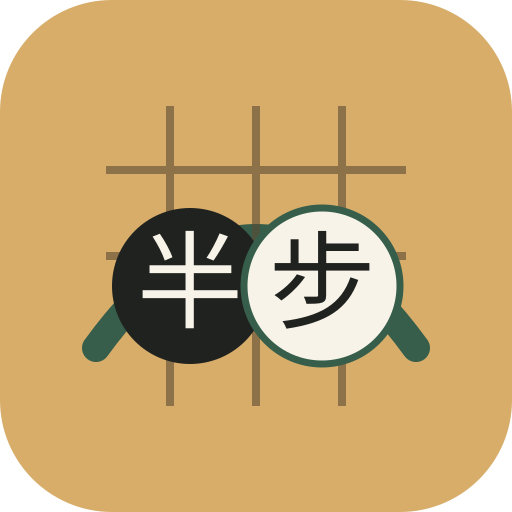
13 · 过点成桥
柔和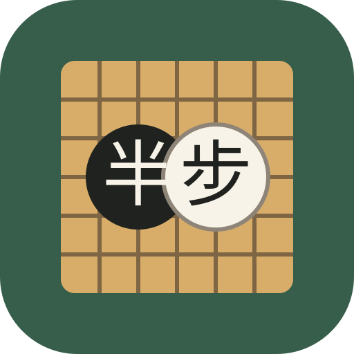
14 · 单格棋盘
棋盘最强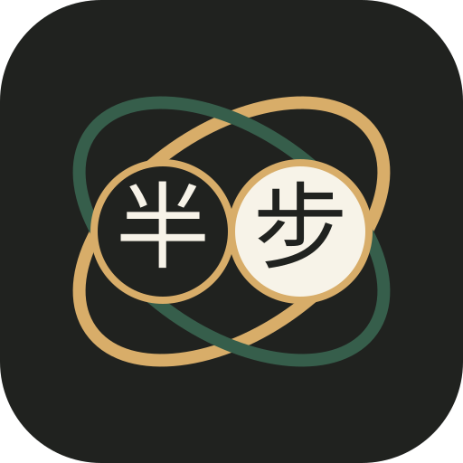
15 · 双石轨道
高端感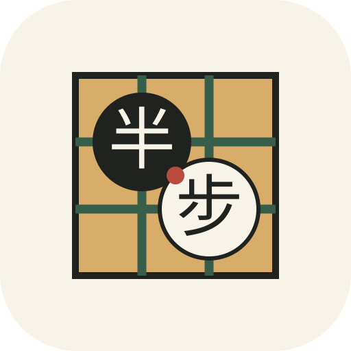
16 · 水墨九宫
东方工具感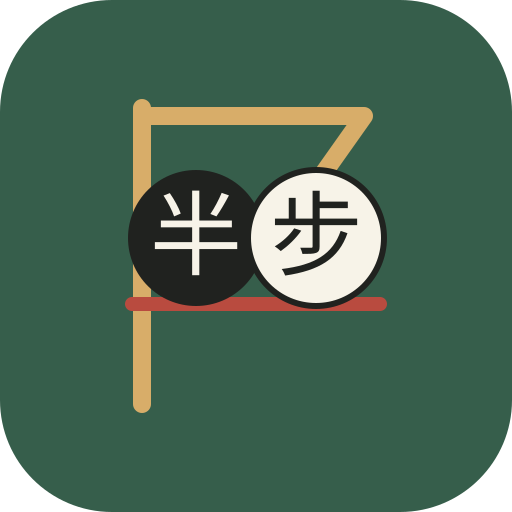
17 · 旗帜胜线
进阶感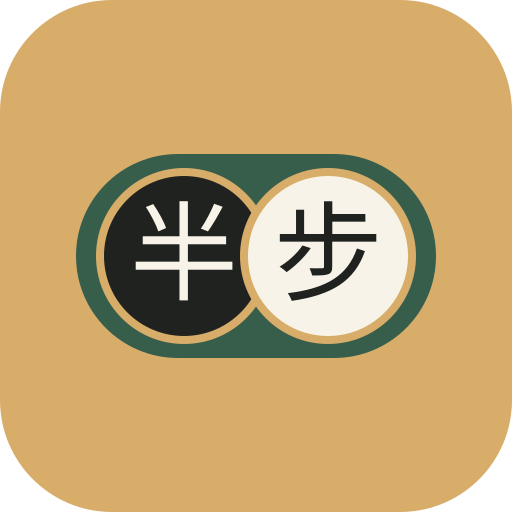
18 · 双石胶囊
简洁亲和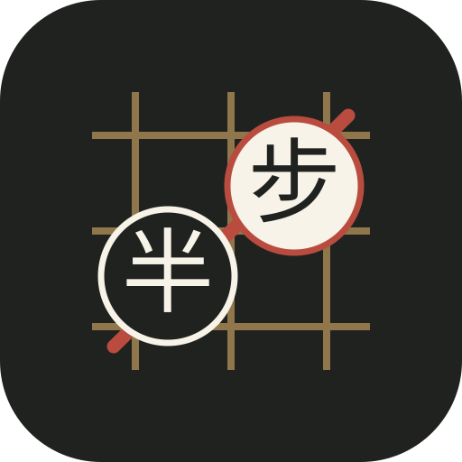
19 · 五连落点
动势明显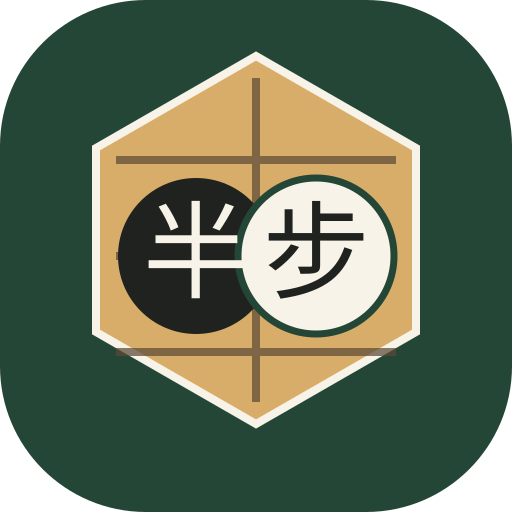